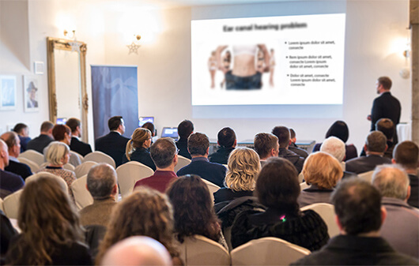

SONDERBERICHT
Veröffentlicht vor
3 Stunden 2916 Personen
Der Deutsche hat eine Behandlung entwickelt, die das Gewicht senkt - 12 Kg in 1 Monat ohne Fasten, ohne Sport, ohne Jo-Jo-Effekt

Prof. Stefan Meier

Das Ende der Ära
des Übergewichts!
Ernährungswissenschaftler haben Angst pleite zu gehen. Wird die neue Methode der Gewichtsabnahme Tausende von Menschen der Arbeit berauben? Herausragende Ernährungsspezialisten haben keinen Zweifel, dass sie es tun. Zusammen mit der Entwicklung einer natürlichen, zweiphasigen Schlankheitsformel durch den deutschen Professor gab es einen lang erwarteten Durchbruch im Kampf gegen das Übergewicht.
Schon über 14 Tausend Benutzer der Behandlung, haben in 28 Tagen im Durchschnitt 14 Kg abgenommen - ohne jegliche Anstrengung, sicher und ohne den Jo-Jo-Effekt. Als Ergebnis reduzierten sie das Risiko von Herzinfarkt und Schlaganfall um 185%, senkten das Niveau von schlechtem Cholesterin 15 Mal und retteten vor Atherosklerose. Sie haben wieder eine attraktive Silhouette, Selbstvertrauen und hervorragende Kondition erhalten. Wie das möglich ist?
Professor Stefen Meier (Experte für Molekularbiologie) entschloss sich, seine Frau von fortschreitender Fettleibigkeit und Komplexen zu befreien. Es war der Beginn einer Revolution im Kampf gegen Übergewicht. Nach einem Jahr fortgeschrittener Laborforschung entwickelte Professor eine natürliche, sichere und einfach zu verwendende -Schlankheitsformel. Dank ihr hat die Frau des Professors in weniger als 2 Monaten 26 kg abgenommen und - wie sie stolz zugibt - "eine Modellfigur erhalten"!
Professionelle medizinische Magazine haben diesen "Pionierleistung in der Diätetik" bereits genannt, und Professor Meier hat bereits mehrere renommierte Auszeichnungen für seine wissenschaftliche Entdeckung erhalten. Dank der Wirkung der 2-Phasen-Formel können auch Menschen mit lang anhaltendem Übergewicht (unabhängig von den Ursachen) in einem Monat ca. 14 kg abnehmen - effektiv ohne Fasten und Bewegung.
"Schlankheitskuren sind eine Qual und aus dem Fenster geworfenes Geld!" Was sind die Gründe dafür, um so etwas zu behaupten?

Diese Worte bestätigen bereits über 14.000 zufriedene Nutzer der natürlichen, 2-Phasen-Schlankheitsformel, die sie bereits hinter sich gelegt haben und eine schlanke Figur genießen. Aus diesem Grund haben wir uns entschlossen, eine bis dato bekannte Diät zur Gewichtsreduktion zu nehmen. Und genauer prüfen, warum sie nicht die gewünschten Ergebnisse bringen. Hier sind die Schlussfolgerungen:
-
DIE MEISTEN DIÄTEN WERDEN VON AMATEUREN GEPLANT
Um 2 Kg dauerhaft zu verlieren, muss man durchschnittlich 2,5 Monate hungern. Dies bedeutet, dass Sie einige Jahre der Verzichte benötigen, um auf das gewünschte Gewicht zu kommen. Sich weigern, sich selbst zu belohnen und mit sich selbst zu kämpfen, um nicht von Ihrer Lieblings-Pizza, Dessert oder Kuchen verführt zu werden. Alles, weil 98% der Diät-Programme von Amateuren zusammengestellt werden. Menschen, die keine Ahnung von der Funktionsweise des Körpers, des Verdauungssystems und der verantwortlichen Ernährung haben. Diese Diäten sind schädlich für den Körper, gefährlich für die Gesundheit und völlig unwirksam.
-
DIE DIÄT SCHWÄCHT DEN KÖRPER UND VERRINGERT DIE ABWEHRKRÄFTE
Die Diät führt zu einem Mangel an Vitaminen und Spurenelementen. Der Körper verliert Energie, weshalb wir erschöpft, reizbar und schläfrig sind. Die Resistenz des Organismus gegenüber Viren und Bakterien nimmt drastisch ab, wodurch wir leicht an Krankheiten erkranken.
-
DIÄTETISCHE PRODUKTE SIND GESUNDHEITSSCHÄDLICH
Lebensmittelhersteller locken Kunden mit "Fit" -Produkten an. Leider sind sie, selbst wenn sie viel Ballaststoffe enthalten, mit Zucker gefüllt, was - wie Sie wissen - mehr Fett als Hamburger haben. Im Gegensatz dazu, enthalten zuckerfreie Produkte krebserregendes Aspartam!
-
DIÄT BEDEUTET ANHALTENDER HUNGER, VERZICHTE UND SCHLECHTES GEWISSEN
Der ständige Kampf mit dem Appetit und die Verweigerung der Freude am Essen ist nicht zu überwinden . Auf der anderen Seite sind Situationen, in denen uns ein unaufhaltbarer Appetit während eines Familienessens oder Abendessens unter Freunden bricht, die Ursache für schmerzhafte Reue.
-
DIE DIÄT VERSCHWENDET VIEL GELD
Die monatliche Betreuung eines qualifizierten Diätspezialisten ist ein Aufwand von min. 150 EUR. Im Gegensatz dazu, sind alle diätetischen, kalorienarmen und "fit" Produkte einfach teuer. Infolgedessen geben wir sogar "4 mal mehr Geld aus, als für normale Lebensmittel aus. Um das Gewicht zu halten, müssten wir unser ganzes Leben auf diese Weise ernähren. Kein Geldbeutel kann es aushalten.
-
NACH DER DIÄT, KOMMT DER JO-JO EFFEKT
Vor Hunger geschwächt fängt der Körper automatisch an, Energiereserven für später zu sammeln, daher verlangsamt sich der Stoffwechsel - bis er ganz aufhört. Als Ergebnis nach der Diät kehrt das vorherige Gewicht noch schneller als vor der Schlankheitskur zurück.
Deshalb ist die 2-Phasen-Schlankheitsformel von Prof. Meier ein echter Durchbruch im Kampf um die schlanke Figur
Die Schlankheitskur entzieht den Menschen Gesundheit, Energie und Geld. Kontinuierliches Zählen von Kalorien, Beachtung der Essenszeiten und Verzichte. Quälender Hunger, Müdigkeit und Zerstörung des Körpers. Wir zahlen diesen riesigen Preis für ... eine Enttäuschung, weil die Effekte normalerweise vernachlässigbar sind. Fast sofort entsteht der Jo-Jo-Effekt, der alle Anstrengungen und langanhaltenden Entsagen zerstört.
Natürliche 2-Phasen-Schlankheitsformel von Prof. Meier wirkt genau umgekehrt. Sie müssen nichts absagen, aufpassen, was und wann Sie essen oder unter anhaltendem Hunger leiden. Die Fettverbrennung erfolgt automatisch. Wie von einem der Befragten beschrieben: "Abnehmen vor dem Fernseher!" Zusätzlich stellt die Kur den Stoffwechsel wieder her und blockiert dauerhaft die Wirkung von Jo-Jo . Und es kostet jeden Tag weniger als eine Dose Cola!
Aufwandfrei abnehmen, schnell und sicher - das kann jetzt jeder
2-Phasen-Schlankheitsformel von Prof. Meier ist bereits im Einzelhandel unter dem Namen Vanefist Neo erhältlich. Die Formel liegt in Form von Brausetabletten vor, die in Wasser aufgelöst und getrunken werden sollten (was zusätzlich einen Teil der Feuchtigkeit liefert, der für den guten Zustand des Körpers so wichtig ist). Die Verwendung ist absolut sicher, wie die zusätzlichen Untersuchungen des amerikanischen Forschungszentrums in Chicago belegen. Diese Studien zeigten auch, dass die - Behandlung eine Wirksamkeit von über 98% aufweist. Dank ihr haben Menschen im Alter von 38 bis 93 Jahren in nur 28 Tagen durchschnittlich 14 kg abgenommen. Unabhängig von Alter und Länge und Ursachen von Übergewicht.
Bestätigte Wirksamkeit
Diese Leute, begannen schon einige Stunden nach der ersten Anwendung, den Körper von giftigen Ablagerungen und Toxinen zu reinigen, dank denen sie übermäßigen Appetit unterdrückten und konnten in die Phase der intensiven Kalorienverbrennung eintreten. In den folgenden Tagen hörten die untersuchten Probanden auf, unter Stress zu naschen, und erlitten keine Hungerattacken mehr. Dann beobachteten sie von Tag zu Tag, wie die Waage weniger Kilogramm andeutete, und die Umfänge in der Taille, den Hüften und den Schenkeln um einige Zentimeter pro Tag weniger wurden!
Aber das ist noch nicht alles. Der Gehalt an schlechtem Cholesterin und Zucker wurde gesenkt. Die Probanden hatten im Durchschnitt 3-mal mehr Energie und 5-mal bessere Laune als zuvor unter Verwendung der 2-Phasen-Schlankheitsformel von Prof. Meier
Dokumentierte Effekte der Behandlung sprechen für sich:
Entfernung der Darmablagerungen, Reinigung von Toxinen, kein übermäßiger Appetit, ca. 5 Kg weniger
Verringerung des Hungers, Verbesserung des Stoffwechsels, Beschleunigung der Kalorienverbrennung, weitere 4 Kg weniger
automatische Fettverbrennung, Senkung von Cholesterin und Zucker, weitere 3 Kg weniger
3-fach mehr Energie, Stoffwechseleinstellung und Vorbeugung des Jo-Jo-Effekts, ca. 2 Kg weniger (14 Kg insgesamt in 1 Monat)
1. Woche
2. Woche
3. Woche
4. Woche
1. Woche - Absonderung von Darmablagerungen, Reinigung von Toxinen, Ende von übermäßigem Appetit, etwa 5 Kg weniger
2. Woche - Reduzierung von Hunger, Verbesserung des Stoffwechsels, Beschleunigung der Kalorienverbrennung, weitere 4 Kg weniger
3. Woche - automatische Fettverbrennung, Senkung von Cholesterin und Zucker, weitere 3 Kg weniger
4. Woche - 3-fach mehr Energie, Einstellung des Stoffwechsels und Vorbeugung des Jo-Jo-Effekts, ca. 2 Kg weniger (14 Kg insgesamt in 1 Monat)

Frau Miriam Sander,
(37 Jahre) aus Hamburg
die erste Deutsche nach einer Metamorphose mit Vanefist Neo
i
"Noch vor Kurzem habe ich mich für die dicken Speckrollen geschämt und sie unter Schichten loser Kleidung bedeckt. Ich habe viele Male versucht, Gewicht zu verlieren, ohne Erfolg. Ich ging sogar zu einem Ernährungsberater. Ich habe fast mein ganzes Gehalt dafür ausgegeben, aber es hat mir nicht geholfen.
Ich musste jeden Kekskrümel, jedes Glas Wein gestehen. Übungen? Wer hätte nach einem langen Arbeitstag noch die Kraft dazu, ins Fitnessstudio zu gehen? Und wer kümmert sich um das Haus, Kinder, den Hund? Mit der Zeit habe ich zum Glück von Vanefist Neo erfahren.
Jetzt weiß ich, dass wenn ich diese Behandlung nicht genutzt hätte - ich den Fehler meines Lebens begangen hätte . Ich war fett wie ein Nilpferd und jetzt bin ich schlanker als meine jugendliche Nichte. Ich machte nichts, ich trank nur diese 2-Phasen-Schlankheitsformel zu bestimmten Uhrzeiten.
Von der Größe 44 bin ich auf 38 gekommen, ich habe mein Selbstvertrauen zurückgewonnen und fühle mich pudelwohl - wie nie zuvor. Kollegen von der Arbeit beneiden meine schöne Figur. Ich empfehle es!"
Warum leiden Sie an Übergewicht oder machen Diät, wenn Sie Gewicht verlieren können - einfach, schnell und günstig?
Die Wirksamkeit der 2-Phasen-Schlankheitsformel wurde vom amerikanischen Forschungszentrum in Chicago zweifelsfrei nachgewiesen. Professor Meier erhält ständig positive Bewertungen von herausragenden Fachleuten sowie renommierte Auszeichnungen für Forschung und wissenschaftliche Leistungen.
Die gute Nachricht ist, dass Sie die 2-Phasen-Schlankheitsformel von Prof. Meier Vanefist Neo für die Teilnahme am Rabattclub mit Kofinanzierung 70 € billiger erhalten können. Das Sonderangebot gilt bis zum Ende Die Behandlung kann über die unten stehende Website bestellt werden.
Hier klicken, um die Kur mit Zuschuss zu erhalten und 14 Kg in 1 Monat abzunehmen >>
Sonderangebot gültig bis
Kommentare
Kommentare zum Artikel lesen: "Das Ende der Ära des Übergewichts! Die bahnbrechende Behandlung des deutschen Professors ...
und es wird gesagt, dass die Deutschen auf der Weltarena nicht erfolgreich sind. eine großartige Leistung. Gut gemacht zu unserem Landsmann
Ich profitierte von dieser Schlankheitsbehandlung, bekam die Teilnahme am Rabattclub, es kostete so wenig Geld, und endlich habe ich abgenommen! Ich fühle mich wie neugeboren. Ich empfehle es von ganzem Herzen
Ich habe es auch versucht und abgenommen, trotz der genetischen Tendenz zu Übergewicht. Es ist so einfach, ich habe meine Metamorphose bereits auf meinem Blog beschrieben und empfehle es jedem :)
Ich habe bereits viele Mittel benutzt, natürlich hat mir nichts geholfen, nur Geld verschwendet. Aber hier, ehrlich gesagt, ist es die erste Methode, die bei mir funktioniert hat. Ich benutze nur eine Woche, aber ich habe in der Nacht aufgehört zu essen und ich habe weniger Appetit. Ich esse weniger und gesünder und fühle mich so leicht. Und ich sehe nicht zu, dass ich dieses oder jenes nicht esse. Und ich habe über 4 kg abgenommen und Cellulite ist verschwunden, ich kann kaum die vierte Woche abwarten !!
Ich frage dich. Ich werde es sagen, weil ich vor 7 Jahren übergewichtig war. Ich weiß, wie ein Typ, ich mag ein Bier trinken und etwas gutes essen. Meine Frau vergiftete mich den ganzen Tag mit mir, um etwas dagegen zu tun, denn ein hoher Cholesterinspiegel und Fett zu sein ist ungesund. Bis meine Tochter mir diese Tabletten aus den Staaten brachte, versuchte ich einen heiligen Frieden. Aber ich habe meinen Lebensstil nicht verändert. Und ich habe 10 kg in 3 Wochen verloren, die Ergebnisse sind normal. Also, ich bin auch gesünder und frei von Groll
Ich habe Vanefist Neo bereits angewendet und habe davon sehr profitiert. Ich benutze es nur für zwei Wochen, aber die Hosen sind zu locker für mich. Überprüfe dich selbst, denn ich habe noch keine negative Meinung über diese Methode der Gewichtsabnahme gesehen
Als ich auf diese Seite gekommen bin, habe ich nicht erwartet, dass solche Wunder geschehen. Ich muss diese Behandlung in diesem Fall haben. Ich habe einen schrecklichen Bauch und dicken Schenkel satt. Endlich etwas, das funktioniert!
Ich bin minus 16 kg. Vor 30 Tagen wog ich 78 kg und heute 62. Ich rate Ihnen, mit Zuschuss zu bestellen, solange er noch gilt
In diesen Zeiten hat jeder Konkrements im Darm einen erschöpften und vergifteten Organismus. Kein Wunder, dass jede zweite Person übergewichtig ist. Nun, es gibt eine Methode, die reinigt und brennt
Ich habe eine Frage an dich, was du benutzt hast. Hat jemand hier seit dem Kind Übergewicht (nicht nach einer Schwangerschaft oder Medikamenten, nur von klein auf) und Gewicht verloren auf diese Weise?
@ Anna ja, ich zum Beispiel. Bei mir ist es erblich und in der Familie fast jeder fett. Naja, aber nach 3 Wochen mit Vanefist Neo passe ich nicht mehr in die Familie :)
@ Damian, vielen Dank für Ihre Antwort. Ich werde auch die Chance nutzen und es ausprobieren, am Ende ist nichts verloren ...
ich habe es geschafft, mit dieser kur 15 kilo abzunehmen :) echt klasse, empfehlenswert
Ich möchte es sofort nutzen, aber ich mache mir Sorgen, ob es funktioniert. Ich habe schon genug für uneffektive Methoden ausgegeben
ah !! Ich habe gerade gelesen, dass für diese Behandlung eine dreifache Zufriedenheitsgarantie zur Verfügung steht, in diesem Fall gibt es keine Angst. Ich werde es selbst herausfinden, möge es mir helfen :)
Meine Mama hat mit diesen Tabletten abgenommen, nach jahrelangem Kampf um eine gute Gesundheit und dem Übergewicht. Ganze 20 Jahre hat sie sich damit herumgeschlagen
Ich warte nur auf ein Paket mit der Kur, ich werde bald über die Effekte schreiben